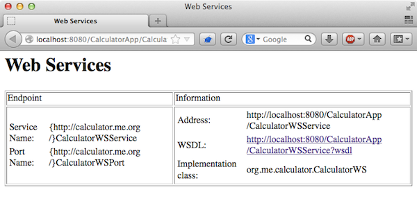
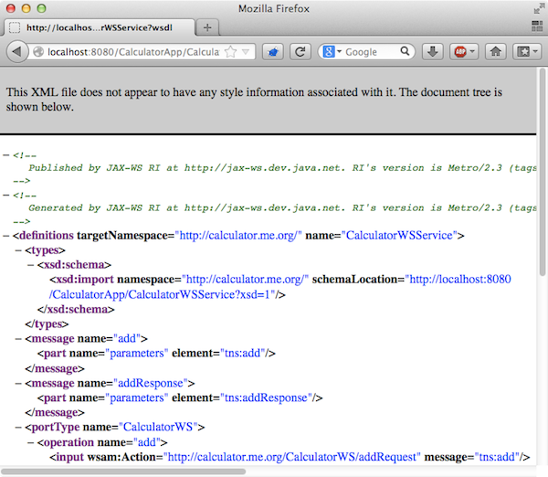
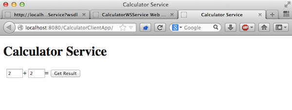
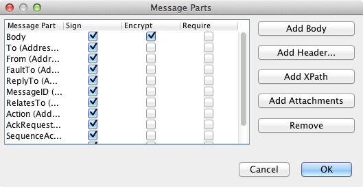
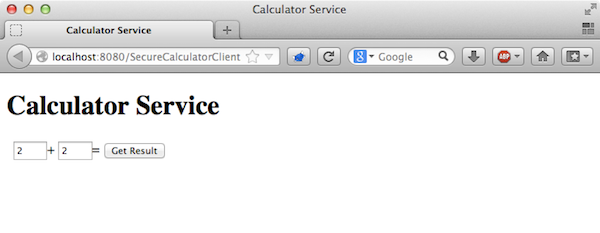
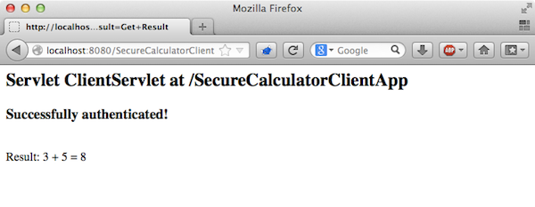

Apache NetBeans
Apache NetBeansLatest release
高度なWebサービス相互運用性
| This tutorial needs a review. You can open a JIRA issue, or edit it in GitHub following these contribution guidelines. |
高度なWebサービス相互運用性(WSIT)は、Webサービスの「サービス品質」とも呼ばれ、Java Webサービスと .Net Webサービスの間の相互運用性を可能にするコンポーネントを含みます。このドキュメントでは、WSITを使用するWebサービスおよびクライアントを構成するためのIDEのサポートの一部をについて説明します。WSITの使用の詳細は、WSITチュートリアルの第3章のWebコンテナおよびNetBeans IDEを使用したWSITの例を参照してください。

Figure 1. このページの内容は、NetBeans IDE 7.2、7.3および7.4に適用されます
このチュートリアルに従うには、次のソフトウェアとリソースが必要です。
| ソフトウェアまたはリソース | 必須バージョン |
|---|---|
Java EEダウンロード・バンドル |
|
バージョン6またはバージョン7 |
|
Java EE互換のWebサーバーまたはアプリケーション・サーバー |
GlassFish Server Open Source Edition 3.1.x、4.x または Oracle WebLogic Server 11gまたは12c |
GlassFishサーバーは、オプションで、NetBeans IDEのJava EEディストリビューションとともにインストールできます。または、GlassFishサーバーのダウンロード・ページかApache Tomcatのダウンロード・ページからダウンロードすることもできます。
*重要: *Java EEプロジェクトには、GlassFish Server 3.1.x、4.xまたはOracle WebLogic Server 12cが必要です。
概要
高度なWebサービス相互運用性に関連するコンポーネントは、4つの主なカテゴリに分類されます。
-
*ブートストラップと構成。*Webサービスにアクセスしてこれを利用できるWebサービス・クライアントを作成するために実行されるプロセスです。
-
*メッセージ・セキュリティ。*次のセキュリティ構成オプションがサポートされています。
-
署名および暗号化のターゲットのオプション
-
クライアント/サービスのWebサービス・セキュリティ
-
クライアント/サービスの信頼のオプション
-
詳細構成オプション
-
キーストア構成オプション
-
*メッセージの最適化。*Webサービスのメッセージが最も効率的な方法でインターネット上で送信されるようにします。Webサービス通信でのメッセージの最適化は、送信前にメッセージをエンコーディングし、最終的な送信先に到達したときにエンコーディングを解除することによって実現されます。
-
*信頼できるメッセージ配信。*A点からB点までエラーなしでメッセージを送信できるシステム性能で測定されます。
「サービス品質」は、「プロジェクト」ウィンドウ内のWebサービスまたはクライアントを表すノードからアクセスできるWebサービス属性エディタで構成されます。このドキュメントでは、IDEとともに配布される2つのサンプル(セキュリティ保護されていないWebサービスのサンプルおよびセキュリティ保護されたWebサービスのサンプル)を紹介します。このドキュメントでは、サンプル間の違いを示し、IDEを使用して独自のWebサービスおよびクライアントにセキュリティを構成する方法について説明します。
サービス品質に関するトピックの完全な全体ガイドについては、WSITチュートリアルを参照してください。
カリキュレータ・サンプルの理解
この課題の目標は、IDEにバンドルされているカリキュレータ・サンプルについて理解することです。後でWebサービスを調査するときにわかるように、このサンプルは、次のサンプルとは対照的に保護されていません。
サンプルの操作
この課題では、新規プロジェクト・ウィザードを使用してサンプルを作成し、IDEでサンプルを確認してアプリケーションをデプロイします。
-
「ファイル」>「新規プロジェクト」(LinuxおよびWindowsの場合は[Ctrl]-[Shift]-[N]、MacOSの場合は[⌘]-[Shift]-[N])を選択し、新規プロジェクト・ウィザードを開きます。
-
「サンプル」カテゴリを展開し、「Webサービス」ノードを選択して、「カリキュレータ」サンプルを選択します。「次」をクリックします。

Figure 2. カリキュレータ・サンプルを示す新規プロジェクト・ウィザード
-
「サーバー」ドロップダウン・リストでJava EEに準拠したサーバーが選択されていることを確認します。「終了」をクリックします。
「終了」をクリックすると、2つのプロジェクトが作成されます。
-
*CalculatorApp*は、「add」という名前の操作を公開するCalculatorWSという名前のWebサービスを提供します。
-
*CalculatorClientApp*は、Webサービスの「add」操作を呼び出すCalculatorWSServiceという名前のクライアントを提供します。
IDEでCalculatorWSサービスのWSDLを検出できないため、CalculatorClientAppサービスにエラー・アイコンが付いている場合があります。CalculatorAppをデプロイし、CalculatorClientAppを消去してビルドすると、エラーを解決できます。

Figure 3. Webサービスとクライアントを表示する「プロジェクト」ウィンドウ
-
CalculatorWS Webサービスをダブルクリックしてファイルをエディタで開き、エディタの上部の「デザインタブをクリックしてビジュアル・デザイナにWebサービスを表示します。

Figure 4. 「デザイン」GUI (ビジュアル・デザイナ)タブのCalculatorWSサービス
*注意: *サービスの「デザイン」タブの「サービス品質」セクションで、有効にされたオプションが_ない_ことが確認できます。その結果、サービス品質コンポーネントはこの特定のWebサービスに適用されません。セキュリティ保護されたWebサービスを作成する際、サービス品質コンポーネントが_有効な_Webサービスについて確認します。
IDEのWebサービスに関する完全なチュートリアルについては、JAX-WS Webサービスについてを参照してください。
カリキュレータ・サンプルのデプロイおよびテスト
-
「CalculatorApp」プロジェクトを右クリックし、「実行」を選択します。
サーバーが起動し、Webサービスがサーバーにデプロイされます。デフォルト・ブラウザでページが開き、サービスの詳細が一部表示されます。

Figure 5. ブラウザのCalculatorWS情報ウィンドウ
-
ブラウザでページのWSDLリンクをクリックすると、Webサービスを定義するWSDLファイルが表示されます。

Figure 6. ブラウザでのCalculator WS WSDL
*注意:*WSDLが表示されない場合、ブラウザのロケーション・バーでURLを確認してください。 http://localhost:_your_port_number_/CalculatorApp/CalculatorWSService?WSDL を指すようにしてください。
-
IDEの「プロジェクト」ウィンドウで、「Webサービス」ノードの下の「CalculatorWS」を右クリックし、ポップアップ・メニューで「Webサービスをテスト」を選択します。
Webサービスをテストする場合、サービスのテスト用のページがブラウザで開きます。

Figure 7. ブラウザでのCalculator WSテスター
IDEで、Webサービスをテストするためのクライアントが提供され、ブラウザでテスト・アプリケーションが開きます。テスト・アプリケーションで、Webサービスで定義された各フィールドに値を入力できます。テスト・アプリケーションには、サービスの操作の名前のラベルが付いたボタンがあります。ボタンをクリックすると、操作の起動の結果が表示されます。
-
「プロジェクト」ウィンドウで、エラー・バッジがないかCalculatorClientAppプロジェクトを調べます。
``ClientServlet.java`` にエラー・アイコンがある場合、プロジェクト・ノードを右クリックし、ポップアップ・メニューで「消去してビルド」を選択します。エラーが表示されたのは、CalculatorWSサービスがデプロイされていなかったためです。デプロイされたため、IDEはこのWSDLを解析でき、ClientServletがコンパイルされます。
-
「CalculatorClientApp」プロジェクト・ノードを右クリックし、「実行」を選択します。
アプリケーションを実行すると、サービスのインタフェースがブラウザで開きます。

Figure 8. ブラウザでのCalculator Serviceクライアント
-
2つのフィールドに値を入力し、「Get Result」をクリックします。
「Get Result」をクリックすると、操作の結果がWebサービスから取得されてクライアントに表示されます。
Webサービスは正しく機能し、クライアントで結果が取得されますが、このプロジェクトは、サービス品質コンポーネントを使用しません。次の項では、サービス品質コンポーネントを構成する方法について説明します。
セキュリティ保護されたカリキュレータ・サンプルの理解
この課題の目標は、セキュリティ保護されたWebサービスを設定する方法と、クライアントがWebサービスと対話する方法を確認することです。
サンプルの操作
この課題では、新規プロジェクト・ウィザードを使用してサンプルを作成し、サービス品質がアプリケーションに構成されていることを確認します。
-
「ファイル」>「新規プロジェクト」(LinuxおよびWindowsの場合は[Ctrl]-[Shift]-[N]、MacOSの場合は[⌘]-[Shift]-[N])を選択し、新規プロジェクト・ウィザードを開きます。
-
「サンプル」カテゴリを展開し、「Webサービス」ノードを選択して、「セキュアなカリキュレータ」サンプルを選択します。「次」をクリックします。
-
「サーバー」ドロップダウン・リストでJava EEに準拠したサーバーが選択されていることを確認します。「終了」をクリックします。
「終了」をクリックすると、2つのプロジェクトが作成されます。
-
*SecureCalculatorApp*は、「add」という名前の操作を公開するCalculatorWSという名前のWebサービスを提供します。
-
*SecureCalculatorClientApp*は、Webサービスの「add」操作を呼び出すCalculatorWSServiceという名前のクライアントを提供します。
IDEでCalculatorWSサービスのWSDLを検出できないため、SecureCalculatorClientAppサービスにエラー・アイコンが付いている場合があります。SecureCalculatorAppをデプロイし、SecureCalculatorClientAppを消去してビルドすると、エラーを解決できます。
-
SecureCalculatorAppの「Webサービス」フォルダでCalculatorWS Webサービスをダブルクリックしてファイルをエディタで開き、エディタの上部の「デザインタブをクリックしてビジュアル・デザイナにWebサービスを表示します。
*注意: *サービスのデザイン・ビューの「サービス品質」セクションで、「セキュア・サービス」オプションは選択され、他の2つのオプションは選択されていないことがわかります。デザイン・ビューの「サービス品質」セクションでは、現在のWebサービスに対してどのサービス品質コンポーネントを_有効_にするかを指定します。
-
「Webサービス属性を編集」をクリックし、Webサービス属性エディタを開きます。

Figure 9. WS属性エディタの「サービス品質」ページ
「サービス品質」タブで、「バージョン互換性」オプションが選択されていることが確認できます。インストールされているMetroまたは.NETのバージョンに一致する最新バージョンを選択します。
バージョン互換性ドロップダウン・リストを有効にするには、最新バージョンのMetroをプロジェクトのクラスパスに追加します。最新のMetroライブラリを追加するには、「プロジェクト」ウィンドウでプロジェクトのノードを右クリックし、プロジェクトの「プロパティ」を開き、「ライブラリ」カテゴリに移動して、最新のMetroライブラリを参照して追加します。
「セキュア・サービス」オプションが選択されていること、およびドロップダウン・リストでセキュリティ・メカニズムが選択されていることに注意してください。セキュリティ・メカニズムは、Webサービス・セキュリティ保護に使用する方法を指定します。
このサンプル・アプリケーションでは、「対称キーを使用したユーザー名認証」セキュリティ・メカニズムが選択されています。オプションの説明および「対称キーを使用したユーザー名認証」セキュリティ・メカニズムの詳細は、対称キーを使用したユーザー名認証を参照してください。その他の使用可能なセキュリティ・メカニズムの詳細は、セキュリティ・メカニズムの構成を参照してください。
-
「サービス品質」タブの「入力メッセージ」および「出力メッセージ」セクションを展開します。

Figure 10. 「メッセージ部品」ボタンが有効な「サービス品質」ページ
セキュリティ・メカニズムとして「対称キーを使用したユーザー名認証」を選択した場合、「入力メッセージ」および「出力メッセージ」で「メッセージ部品」ボタンが有効です。
*注意: *入力メッセージの「認証トークン」ドロップダウン・リストとオプションは、「対称キーを使用したユーザー名認証」セキュリティ・メカニズムの場合、有効ではありません。
-
「入力メッセージ」セクションで、「メッセージ部品」ボタンをクリックします。

Figure 11. 「メッセージ部品」ダイアログ
「メッセージ部品」ダイアログ・ボックスに、様々な要素のセキュリティ・オプションが表示されます。チェックボックスを選択して、部品の署名、暗号化および必須を有効または無効にできます。要素ごとに次のオプションを指定できます。
-
完全性の保護(デジタル署名)が必要なメッセージの部品または要素を指定するには、*「署名」*を選択します。
-
機密性(暗号化)が必要なメッセージの部品または要素を指定するには*「暗号化」*を選択します。
-
メッセージに含まれる必要がある部品または要素を指定するには、*「必須」*を選択します。
次に、Webサービス・クライアントのサービス品質がどのように構成されているかを確認します。
-
「プロジェクト」ウィンドウで、*「SecureCalculatorClientApp」*プロジェクトの「Webサービス参照」ノードを展開します。
-
CalculatorWSServiceノードを右クリックし、ポップアップ・メニューで「Webサービス属性を編集」を選択し、「Webサービス属性」ダイアログ・ボックスを開きます。

Figure 12. Webサービス・クライアントのサービス品質ダイアログ
デフォルト・ユーザー"wsitUser"およびパスワードが存在することを確認できます。デフォルト・ユーザーおよびパスワードは、ファイル・レルムで作成されました。
「セキュリティ」セクションで「開発のデフォルトの使用」オプションを選択すると、IDEは、証明書をGlassFishサーバーのキーストアとトラストストアにインポートし、すぐに開発で使用できるようにします。
*重要: *本番環境では、多くの場合独自の証明書とユーザー設定を使用しますが、開発環境では、これらのデフォルトが便利である場合があります。
Webサービス・クライアントにセキュリティを構成する方法の詳細は、WSITチュートリアルの第7章のWSITセキュリティの使用を参照してください。
セキュリティ保護されたカリキュレータ・サンプルのデプロイおよびテスト
-
Webサービス・プロジェクト・ノードを右クリックし、「実行」を選択してWebサービスをデプロイします。
-
Webサービス・クライアントのプロジェクト・ノードを右クリックし、「実行」を選択します。
クライアントを実行すると、アプリケーションがデプロイされ、サービスのインタフェースがブラウザで開きます。

Figure 13. ブラウザでの保護Webサービス・クライアント
-
各フィールドに数値を入力し、「Get Result」をクリックします。
「Get Result」をクリックすると、クライアントが認証されたことを示すメッセージおよび操作の結果がページに表示されます。

Figure 14. ブラウザで結果を表示する保護Webサービス・クライアント
ユーザー/パスワードのペアが無効なため認証に失敗したというエラー・メッセージを受け取る場合、IDEによって作成されたデフォルト・ユーザーに問題があるか、またはクライアントに設定された資格情報が一致しないかのいずれかです。この場合、ユーザー/パスワードのペアを手動で作成する必要があります。手順については、WSITチュートリアルの第7章のWSITセキュリティの使用を参照してください。
関連項目
NetBeans IDEを使用してWebサービスを開発する方法の詳細は、次のリソースを参照してください。
nbj2ee@netbeans.orgメーリング・リストに登録することによって、NetBeans IDE Java EE開発機能に関するご意見やご提案を送信したり、サポートを受けたり、最新の開発情報を入手したりできます。